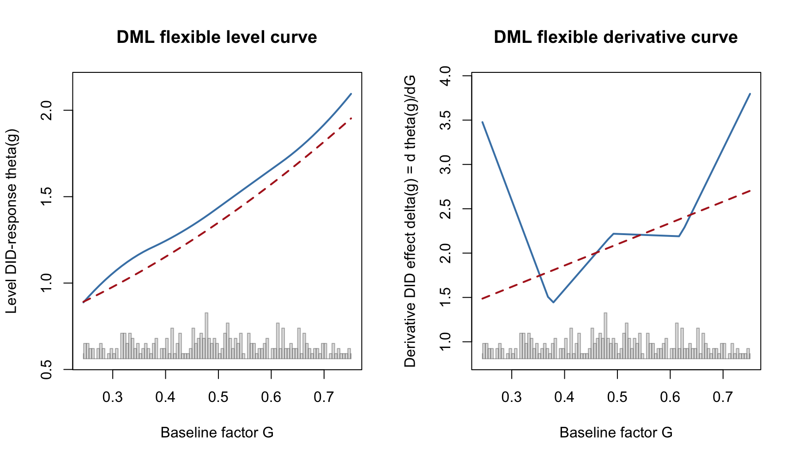
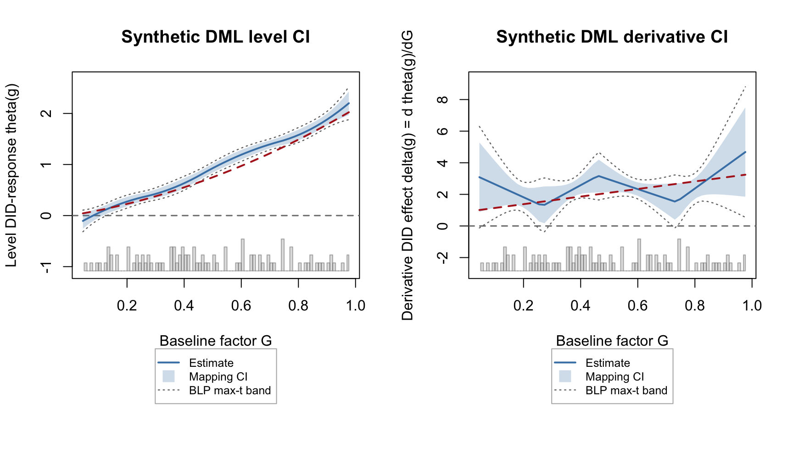

| method | target | when_to_use | main_output |
|---|---|---|---|
| dml_plr | Partially linear scalar slope | You want one adjusted slope summary. | event summary row |
| dml_flex | Flexible level curve theta(g) and derivative theta’(g) | You want a level curve, derivative curve, or fixed-G contrast. | curve object plus plot/reporting helpers |
| dml_incremental | Observed-population average derivative E[partial_g mu(G, X)] | You want the average local derivative over the observed G distribution. | event summary row |
5 DML Estimators for Continuous G
This chapter gives a focused workflow for the double/debiased machine learning (DML) estimators in fdid when G is continuous. To keep the target logic clear, the entire chapter uses one synthetic panel with a known treatment effect curve. The same data-generating process carries the scalar slope, flexible curve, curve-inference, reporting, and incremental-derivative examples.
The most important rule is target-first: choose the estimand before choosing the method.
5.1 Target Map
All three methods work with the FDID first-difference outcome
\[ \Delta Y_i = \bar Y_{i,\mathrm{event}} - Y_{i,\mathrm{ref}}. \]
DML then proceeds in three steps:
- Learn nuisance functions with cross-fitting.
- Construct an orthogonal signal for the target.
- Aggregate or map that signal into the requested object: a scalar slope, a smooth curve in
G, or an observed-population average derivative.
Binary method = "dml_binary" is covered in Chapter Chapter 2 because it targets a binary contrast, not a continuous-G scalar or curve.
DML inference is target-specific. The scalar methods use score-based standard errors; flexible curves add a second-stage mapping layer. That mapping layer is why dml_flex intervals should be read more carefully than scalar PLR intervals.
| DML output | Where to look | Inference reading |
|---|---|---|
dml_plr scalar slope |
summary() |
analytical score CI, or score-multiplier critical value if requested |
dml_flex level/derivative curve |
curve_event, plot(type = "curve") |
pointwise and band labels depend on signal_map |
dml_flex fixed contrast |
fdid_contrast() |
uses stored covariance for blp_spline, otherwise replicate/band/fallback when available |
dml_incremental observed average derivative |
summary() |
scalar orthogonal-score SE; compare density_method choices as sensitivity |
5.2 Synthetic Data Setup
The DGP has four periods. Period 2 is the reference period and periods 3 and 4 are the event window. Each unit has a continuous baseline factor \(G_i \sim \mathrm{Beta}(4, 4)\) and three covariates. This gives dense interior support and avoids letting a few extreme endpoints dominate a tutorial figure. The event-period effect is
\[ \tau(g) = 0.4 + 0.6g + 0.8g^2. \]
Period 3 receives \(1\times \tau(G_i)\) and period 4 receives \(2\times \tau(G_i)\). Therefore the event-average level curve is \(1.5\tau(g)\), the derivative curve is \(1.5\tau'(g)\), and the observed incremental target is the sample average of \(1.5\tau'(G_i)\).
library(fdid)
n_dml_sim <- 300
time_dml_sim <- 1:4
G_dml_sim <- rbeta(n_dml_sim, shape1 = 4, shape2 = 4)
X1_dml_sim <- rnorm(n_dml_sim)
X2_dml_sim <- rnorm(n_dml_sim)
X3_dml_sim <- rbinom(n_dml_sim, size = 1, prob = 0.45)
dml_tau <- function(g) 0.4 + 0.6 * g + 0.8 * g^2
dml_tau_deriv <- function(g) 0.6 + 1.6 * g
dml_true_level <- function(g) 1.5 * dml_tau(g)
dml_true_deriv <- function(g) 1.5 * dml_tau_deriv(g)
dml_sim_panel <- data.frame(
id = rep(seq_len(n_dml_sim), each = length(time_dml_sim)),
time = rep(time_dml_sim, times = n_dml_sim),
G = rep(G_dml_sim, each = length(time_dml_sim)),
x1 = rep(X1_dml_sim, each = length(time_dml_sim)),
x2 = rep(X2_dml_sim, each = length(time_dml_sim)),
x3 = rep(X3_dml_sim, each = length(time_dml_sim))
)
dml_sim_panel$Y <- with(
dml_sim_panel,
0.35 * x1 - 0.25 * x2 + 0.20 * x3 +
0.10 * sin(2 * pi * G) + 0.05 * time +
ifelse(time >= 3, (time - 2) * dml_tau(G), 0) +
rnorm(nrow(dml_sim_panel), sd = 0.08)
)
s_dml_sim <- fdid_prepare(
data = dml_sim_panel,
Y_label = "Y",
X_labels = c("x1", "x2", "x3"),
G_label = "G",
unit_label = "id",
time_label = "time"
)| quantity | value |
|---|---|
| units | 300 |
| periods | 4 |
| reference period | 2 |
| event periods | 3, 4 |
| default curve grid size | 50 |
| default grid minimum | 0.244467991994472 |
| default grid maximum | 0.751094367450867 |
| true observed average derivative | 2.08820910681817 |
5.3 Common DML Inputs
The rendered examples use learner = "grf" to make nuisance learning flexible. The package default remains learner = "linear" because it is faster and has fewer backend requirements. GRF examples take longer because the nuisance models are fit inside cross-fitting loops.
| option | role |
|---|---|
| learner | Nuisance learner; this chapter uses grf. |
| K | Number of cross-fitting folds. |
| S | Number of sample splits. |
| eval_g | Curve evaluation grid; only used by dml_flex. |
| trim | Default eval_g endpoint rule for dml_flex. |
| density_method | Conditional-density approximation for dml_flex and dml_incremental. |
| signal_map | Second-stage curve mapping for dml_flex only. |
| dml_inference | Scalar DML inference style for dml_plr. |
5.4 Scalar PLR Benchmark
method = "dml_plr" estimates one partially linear slope. It is a benchmark for the question “is there one average adjusted relationship between continuous G and the FDID first-difference outcome?”
fit_plr_score <- fit_fdid(
s_dml_sim,
tr_period = 3:4,
ref_period = 2,
method = "dml_plr",
learner = "grf",
K = 3,
S = 1,
dml_inference = "score"
)
fit_plr_multiplier <- fit_fdid(
s_dml_sim,
tr_period = 3:4,
ref_period = 2,
method = "dml_plr",
learner = "grf",
K = 3,
S = 1,
dml_inference = "score_multiplier",
dml_boot = 99
)For scalar DML targets, summary() is the first object to inspect. It reports the event-period slope and labels the DML inference path used by the fit.
if (!is_fit_error(fit_plr_score)) {
summary(fit_plr_score)
}
#>
#> Factorial Difference-in-Differences (FDID) Summary
#> ========================================================================
#> Method: dml_plr
#> Variance Type: robust
#> Reference Period: 2
#> Pre-Event Period: 1, 2
#> Event Period: 3, 4
#> DML Target: partially_linear_slope
#> DML Inference: analytical_score
#> ========================================================================
#>
#> Aggregate Estimates
#> ------------------------------------------------------------------------
#> Estimate Std.Error 95% CI
#> ------------------------------------------------------------------------
#> Pre-Event 0.0046 0.0385 [-0.0707, 0.0800]
#> Event 2.1272 0.0430 [2.0428, 2.2116]
#> ------------------------------------------------------------------------
#>
#> Dynamic Estimates
#> ------------------------------------------------------------------------
#> Estimate Std.Error 95% CI
#> ------------------------------------------------------------------------
#> 1 0.0111 0.0379 [-0.0632, 0.0853]
#> 2 0.0000 0.0000 [0.0000, 0.0000]
#> ....................................................................
#> 3 1.4461 0.0456 [1.3567, 1.5354]
#> 4 2.8184 0.0521 [2.7163, 2.9205]
#> ------------------------------------------------------------------------| fit | target | learner | Estimate | Std.Error | CI_Lower | CI_Upper | note |
|---|---|---|---|---|---|---|---|
| PLR score | partially linear slope | grf | 2.127 | 0.043 | 2.043 | 2.212 | |
| PLR score multiplier | partially linear slope | grf | 2.149 | 0.043 | 2.076 | 2.223 |
The default scalar DML interval is analytical score inference. The score_multiplier option changes the critical value using a scalar multiplier process based on stored score contributions. It is not a nonparametric refit bootstrap.
| field | value |
|---|---|
| target_family | continuous_G_DML |
| target_population | all_complete_observations |
| inference_method | score_multiplier |
| uniform_band_method | NA |
| target_estimand | partially_linear_slope |
| target_scale | scalar |
| inference_type | score_multiplier |
| inference_scope | pointwise_scalar |
| orthogonal_score | partialling_out |
5.5 Flexible DML Curves
method = "dml_flex" targets the flexible level curve
\[ \theta(g) = E_X[\mu(g, X)] \]
and its derivative with respect to G. The implementation cross-fits nuisance models, builds orthogonal pseudo-outcomes, and maps those pseudo-outcomes back to the eval_g grid.
Two option families are easy to confuse:
density_methodestimates the conditional density \(f_{G \mid X}(g \mid x)\) needed by the continuous-treatment score. It is used bydml_flexanddml_incremental.signal_mapmaps the cross-fitteddml_flexsignal back to theeval_ggrid. It is used bydml_flexonly.
signal_map = "blp_spline" is therefore not a density algorithm. It is a B-spline best linear projection mapping path that stores finite-grid covariance matrices for level and derivative curves.
| density_method | algorithm | practical_reading |
|---|---|---|
| residual_kde | Model E[G | X], then KDE residuals. | Fast default; best for location-shift designs. |
| location_scale | Model E[G | X] and residual scale, then KDE standardized residuals. | Allows heteroskedastic G | X. |
| local_kde | Product kernel over covariates plus Gaussian KDE over G. | Most nonparametric; sensitive to covariate dimension. |
The signal_map options control only the second-stage map from the cross-fitted signal to the stored eval_g grid:
| signal_map | mapping | inference_note |
|---|---|---|
| local_poly | Local polynomial smoother; default map. | Pointwise local-polynomial SE; practical signal-residual multiplier band. |
| kernel | Local-linear smoother alias. | Same practical route with degree fixed to local linear. |
| spline | B-spline regression map. | Pointwise delta-method SE; practical signal-residual multiplier band. |
| gam | mgcv GAM smooth map. | Pointwise smooth-design SE; practical signal-residual multiplier band. |
| blp_spline | B-spline best linear projection map. | Stores theta_vcov and delta_vcov; Gaussian max-t band from covariance. |
map_degree controls local-polynomial and spline degree. map_df controls the spline/GAM basis size when relevant. These are curve-mapping choices; they do not change the nuisance learner or the conditional-density algorithm.
dml_curve_draws <- 99L
fit_flex_spline <- fit_fdid(
s_dml_sim,
tr_period = 3:4,
ref_period = 2,
method = "dml_flex",
learner = "grf",
K = 3,
S = 1,
signal_map = "spline",
density_method = "residual_kde",
boot = dml_curve_draws
)
fit_flex_blp <- fit_fdid(
s_dml_sim,
tr_period = 3:4,
ref_period = 2,
method = "dml_flex",
learner = "grf",
K = 3,
S = 1,
signal_map = "blp_spline",
density_method = "location_scale",
boot = dml_curve_draws
)For flexible DML, summary() is still useful, but the scalar event row is an interval-average level-slope summary over the fitted eval_g range. The level and derivative curves remain the primary objects for this target.
if (!is_fit_error(fit_flex_blp)) {
summary(fit_flex_blp)
}
#>
#> Factorial Difference-in-Differences (FDID) Summary
#> ========================================================================
#> Method: dml_flex
#> Variance Type: robust
#> Reference Period: 2
#> Pre-Event Period: 1, 2
#> Event Period: 3, 4
#> DML Target: fixed_G_level_curve
#> DML Inference: second_stage_mapping
#> ========================================================================
#>
#> Aggregate Estimates
#> ------------------------------------------------------------------------
#> Estimate Std.Error 95% CI
#> ------------------------------------------------------------------------
#> Pre-Event -0.0422 0.0173 [-0.0760, -0.0084]
#> Event 1.4589 0.0206 [1.4186, 1.4992]
#> ------------------------------------------------------------------------
#>
#> Dynamic Estimates
#> ------------------------------------------------------------------------
#> Estimate Std.Error 95% CI
#> ------------------------------------------------------------------------
#> 1 -0.0437 0.0176 [-0.0782, -0.0092]
#> 2 0.0000 0.0000 [0.0000, 0.0000]
#> ....................................................................
#> 3 0.9704 0.0164 [0.9382, 1.0026]
#> 4 1.9428 0.0407 [1.8630, 2.0225]
#> ------------------------------------------------------------------------
#>
#> Moderation Curve Summary (G-domain)
#> ------------------------------------------------------------------------
#> Method: dml_flex | Eval points: 50 | G range: [0.244, 0.751]
#> Target: level curve theta(g) and derivative curve theta'(g)
#> Learner: grf | K folds: 3 | S splits: 1
#> Signal map: blp_spline | Density: location_scale
#> Simultaneous bands: gaussian_max_t_blp_spline_covariance
#> (Full theta(g) and theta'(g) curves in $curve_event; scalar $est$event is grid-average theta)
#> ------------------------------------------------------------------------
#>
#> DML Diagnostics
#> ------------------------------------------------------------------------
#> Learner: grf
#> Density method: location_scale
#> Complete observations: 300
#> Min s_hat(G|X): 0.01229 | share < 0.01: 0.000
#> Signal quantiles: p05=0.8992, p50=1.4338, p95=2.0615
#> ------------------------------------------------------------------------| fit | signal_map | density_method | Estimate | Std.Error | CI_Lower | CI_Upper | note |
|---|---|---|---|---|---|---|---|
| dml_flex spline | spline | residual_kde | 1.456 | 0.013 | 1.430 | 1.482 | |
| dml_flex BLP spline | blp_spline | location_scale | 1.459 | 0.021 | 1.419 | 1.499 |
The scalar event row for dml_flex is a compatibility summary of the level curve’s endpoint slope. The curve fields are the primary output, so the table below prints a compact excerpt rather than all 50 grid rows.
| G | theta_hat | true_theta | se_theta | delta_hat | true_delta | se_delta | |
|---|---|---|---|---|---|---|---|
| 1 | 0.244 | 0.888 | 0.892 | 0.040 | 3.477 | 1.487 | 1.282 |
| 8 | 0.317 | 1.098 | 1.006 | 0.027 | 2.328 | 1.660 | 0.307 |
| 15 | 0.389 | 1.228 | 1.132 | 0.012 | 1.515 | 1.834 | 0.522 |
| 22 | 0.462 | 1.355 | 1.271 | 0.015 | 2.013 | 2.008 | 0.246 |
| 29 | 0.534 | 1.513 | 1.423 | 0.017 | 2.209 | 2.182 | 0.188 |
| 36 | 0.606 | 1.672 | 1.587 | 0.012 | 2.192 | 2.355 | 0.515 |
| 43 | 0.679 | 1.852 | 1.764 | 0.027 | 2.918 | 2.529 | 0.295 |
| 50 | 0.751 | 2.095 | 1.953 | 0.038 | 3.796 | 2.703 | 1.106 |
The next figure shows the point estimates first, without uncertainty bands. This separates the shape of the fitted level and derivative curves from the inference layer introduced in the next section.
if (!is_fit_error(fit_flex_blp)) {
dml_grid_blp <- fit_flex_blp$eval_g
true_level <- dml_true_level(dml_grid_blp)
true_deriv <- dml_true_deriv(dml_grid_blp)
old_par <- par(mfrow = c(1, 2))
plot(fit_flex_blp, type = "curve", curve = "level",
interval = "none", Xdistr = "histogram",
support.panel = "embedded", legend.position = "none",
main = "DML flexible level curve")
lines(dml_grid_blp, true_level, col = "firebrick", lty = 2, lwd = 2)
plot(fit_flex_blp, type = "curve", curve = "derivative",
interval = "none", Xdistr = "histogram",
support.panel = "embedded", legend.position = "none",
main = "DML flexible derivative curve")
lines(dml_grid_blp, true_deriv, col = "firebrick", lty = 2, lwd = 2)
par(old_par)
}
5.6 DML Curve Inference
The DML curve inference labels are method-specific. Read the legend and metadata as part of the result:
- Pointwise intervals for
dml_flexare second-stage mapping intervals. - With
signal_map = "spline", the simultaneous band is a practical residual multiplier band over cross-fitted signal-mapping residuals. - With
signal_map = "blp_spline", the object stores spline-basis covariance matrices and uses a Gaussian max-\(t\) critical value for finite-grid bands when the covariance is usable. - Neither path is a full nonparametric DML refit bootstrap over all nuisance stages.
In short, blp_spline is the current route with stored finite-grid covariance for level and derivative curves. The other maps are useful sensitivity checks, but their bands are practical mapping bands rather than theorem-level uniform DML bands.
| field | value |
|---|---|
| signal_map | blp_spline |
| density_method | location_scale |
| band_method | gaussian_max_t_blp_spline_covariance |
| theta_vcov_available | TRUE |
| delta_vcov_available | TRUE |
| gaussian_crit_theta | 2.778 |
| simultaneous_crit_theta | 2.778 |
The firebrick dashed line in the figure below is the known event-average truth from the DGP, evaluated on the stored 50-point default grid.
if (!is_fit_error(fit_flex_blp)) {
dml_grid_blp <- fit_flex_blp$eval_g
true_level <- dml_true_level(dml_grid_blp)
true_deriv <- dml_true_deriv(dml_grid_blp)
old_par <- par(mfrow = c(1, 2))
plot(fit_flex_blp, type = "curve", curve = "level",
interval = "both", Xdistr = "histogram",
support.panel = "embedded",
main = "Synthetic DML level with CI")
lines(dml_grid_blp, true_level, col = "firebrick", lty = 2, lwd = 2)
plot(fit_flex_blp, type = "curve", curve = "derivative",
interval = "both", Xdistr = "histogram",
support.panel = "embedded",
main = "Synthetic DML derivative with CI")
lines(dml_grid_blp, true_deriv, col = "firebrick", lty = 2, lwd = 2)
par(old_par)
}
5.7 Reporting Curve Quantities
Use the reporting helpers when the estimand is a specific level contrast or derivative value. For BLP-spline curves, fdid_contrast() can use the stored curve covariance matrix, so exact-grid contrasts reduce to the familiar V22 + V11 - 2 * V12 identity.
fdid_contrast(fit_flex_blp, g0 = min(fit_flex_blp$eval_g),
g1 = max(fit_flex_blp$eval_g))
fdid_derivative(fit_flex_blp, g0 = stats::median(fit_flex_blp$eval_g))| target | method | g0 | g1 | estimate | std.error | conf.low | conf.high | inference |
|---|---|---|---|---|---|---|---|---|
| level contrast | dml_flex | 0.244 | 0.751 | 1.207 | 0.054 | 1.101 | 1.312 | vcov |
| derivative value | dml_flex | 0.498 | NA | 2.217 | 0.421 | 1.392 | 3.042 | vcov |
5.8 Incremental Average Derivative
method = "dml_incremental" is not the average of the dml_flex derivative curve. It targets the observed-population average derivative directly, using an orthogonal score that includes the conditional density score for G | X. In this synthetic panel, the true target is the sample average of \(1.5\tau'(G_i)\).
fit_inc_residual <- fit_fdid(
s_dml_sim,
tr_period = 3:4,
ref_period = 2,
method = "dml_incremental",
learner = "grf",
K = 3,
S = 1,
density_method = "residual_kde"
)
fit_inc_location <- fit_fdid(
s_dml_sim,
tr_period = 3:4,
ref_period = 2,
method = "dml_incremental",
learner = "grf",
K = 3,
S = 1,
density_method = "location_scale"
)
fit_inc_local <- fit_fdid(
s_dml_sim,
tr_period = 3:4,
ref_period = 2,
method = "dml_incremental",
learner = "grf",
K = 3,
S = 1,
density_method = "local_kde"
)Because dml_incremental is a scalar observed-average derivative target, summary() is the main reporting interface. The comparison table below then shows how the same target moves across conditional-density choices.
if (!is_fit_error(fit_inc_residual)) {
summary(fit_inc_residual)
}
#>
#> Factorial Difference-in-Differences (FDID) Summary
#> ========================================================================
#> Method: dml_incremental
#> Variance Type: robust
#> Reference Period: 2
#> Pre-Event Period: 1, 2
#> Event Period: 3, 4
#> DML Target: observed_population_average_derivative
#> DML Inference: analytical_score
#> ========================================================================
#>
#> Aggregate Estimates
#> ------------------------------------------------------------------------
#> Estimate Std.Error 95% CI
#> ------------------------------------------------------------------------
#> Pre-Event 0.0208 0.0586 [-0.0940, 0.1357]
#> Event 1.2462 0.3809 [0.4997, 1.9928]
#> ------------------------------------------------------------------------
#>
#> Dynamic Estimates
#> ------------------------------------------------------------------------
#> Estimate Std.Error 95% CI
#> ------------------------------------------------------------------------
#> 1 0.0221 0.0558 [-0.0873, 0.1315]
#> 2 0.0000 0.0000 [0.0000, 0.0000]
#> ....................................................................
#> 3 1.5401 0.4822 [0.5950, 2.4851]
#> 4 2.1521 0.6231 [0.9308, 3.3734]
#> ------------------------------------------------------------------------
#>
#> DML Incremental Signal
#> ------------------------------------------------------------------------
#> Target: observed-population average derivative E[partial_g mu(G, X)]
#> Learner: grf | K folds: 3 | S splits: 1
#> Density: residual_kde
#> (Scalar estimate uses the cross-fitted orthogonal average-derivative signal)
#> ------------------------------------------------------------------------
#>
#> DML Diagnostics
#> ------------------------------------------------------------------------
#> Learner: grf
#> Density method: residual_kde
#> Complete observations: 300
#> Min s_hat(G|X): 0.02660 | share < 0.01: 0.000
#> Signal quantiles: p05=-0.7270, p50=0.0328, p95=4.4285
#> partial_g mu quantiles: p05=0.0000, p50=0.0000, p95=0.8943
#> partial_g log s quantiles: p05=-11.9633, p50=-0.8101, p95=10.9498
#> Residual-correction quantiles: p05=-0.7270, p50=0.0178, p95=1.4897
#> ------------------------------------------------------------------------| fit | density_method | truth | Estimate | Std.Error | CI_Lower | CI_Upper | note |
|---|---|---|---|---|---|---|---|
| incremental residual KDE | residual_kde | 2.088 | 1.246 | 0.381 | 0.500 | 1.993 | |
| incremental location-scale | location_scale | 2.088 | 3.273 | 0.935 | 1.441 | 5.106 | |
| incremental local KDE | local_kde | 2.088 | 1.690 | 0.530 | 0.652 | 2.728 |
5.9 Learner Choice
The DML estimators support several nuisance learners. Optional learner packages are loaded only when requested, so a tutorial should check availability before running a large grid.
| learner | package | available | |
|---|---|---|---|
| linear | linear | NA | TRUE |
| gam | gam | mgcv | TRUE |
| lasso | lasso | glmnet | TRUE |
| ridge | ridge | glmnet | TRUE |
| elasticnet | elasticnet | glmnet | TRUE |
| ranger | ranger | ranger | TRUE |
| grf | grf | grf | TRUE |
| nnet | nnet | nnet | TRUE |
| xgboost | xgboost | xgboost | TRUE |
5.10 High-Dimensional Expansions
High-dimensional expansions are another sensitivity dimension. The example below creates a polynomial and interaction basis from the same synthetic prepared data. This is a design step; for a full analysis, vary one dimension at a time: learner, expanded design, density_method, then signal_map.
s_dml_sim_hd <- fdid_expand_covariates(
s_dml_sim,
basis_type = "polynomial",
poly_degree = 2,
include_interactions = TRUE
)| design | covariate_columns |
|---|---|
| raw covariates | 3 |
| polynomial plus interactions | 21 |
5.11 DML Checklist
Before reporting a DML result, check:
- whether the target is scalar, curve, or incremental;
- whether
Gis truly continuous or binary; - which nuisance learner was used and whether optional packages were loaded;
- which conditional-density method was used for
dml_flexordml_incremental; - which curve mapping was used for
dml_flex; - whether the interval is analytical score, scalar score multiplier, practical signal-residual multiplier, or BLP-spline Gaussian max-\(t\);
- whether curve conclusions rely on sparse support or a fragile derivative.